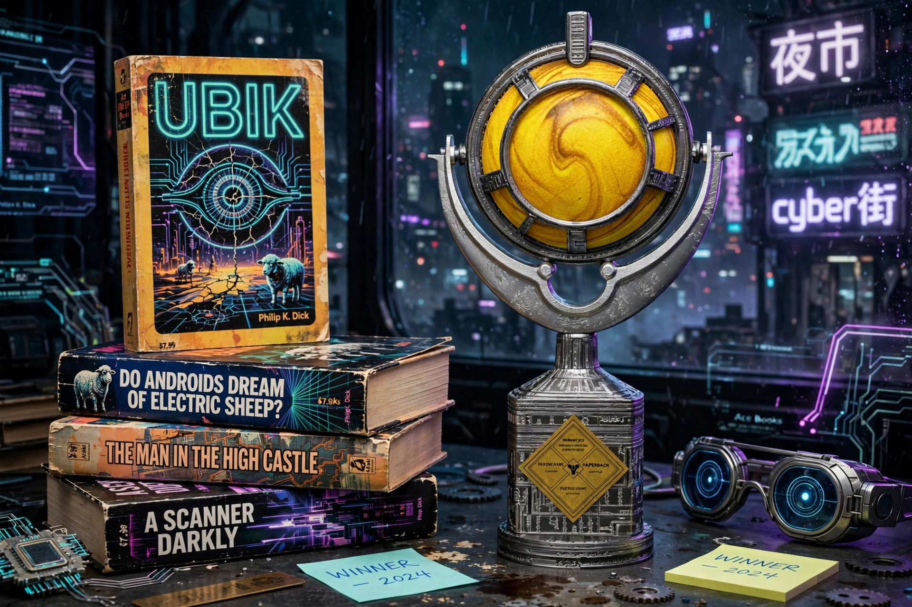

The Philip K. Dick Award is an American science fiction award given annually at Norwescon in Seattle to the best science fiction paperback original published in the United States during the previous calendar year. It is named for the influential writer Philip K. Dick and was founded in 1983, the year after his death, by Thomas M. Disch with support from the Philip K. Dick Trust.

| Awarded for | Best science fiction paperback original published in the US |
|---|---|
| Location | Norwescon, Seattle, Washington |
| First awarded | 1983 (for 1982 publications) |
| Named after | Philip K. Dick |
Dick's own novels were largely published as paperback originals, often overlooked by hardcover-focused awards; the award honors that format. It is administered by the Philadelphia Science Fiction Society and, later, the Norwescon organizing committee, with a panel of judges (typically five, including previous winners) selecting the winner and sometimes a special citation.
The first winner was Rudy Rucker's Software (1982). William Gibson's Neuromancer won for 1984, launching cyberpunk's mainstream recognition. Other winners include Tim Powers (The Anubis Gates), James P. Blaylock, Richard Grant, Pat Murphy, Neal Stephenson (The Diamond Age, shared honor), Stephen Baxter, Ann Leckie (Ancillary Justice shared the narrative acclaim of the field though it won as a paperback original in 2013), and Meg Elison (The Book of the Unnamed Midwife). Judges occasionally name a special citation alongside the winner.
Because it champions paperback originals, the award is credited with drawing attention to innovative work — particularly cyberpunk and slipstream — that might otherwise be missed, and a win or nomination is often noted on later editions of the honored books.
See also: Philip K. Dick · Hugo Award · Nebula Award · Norwescon